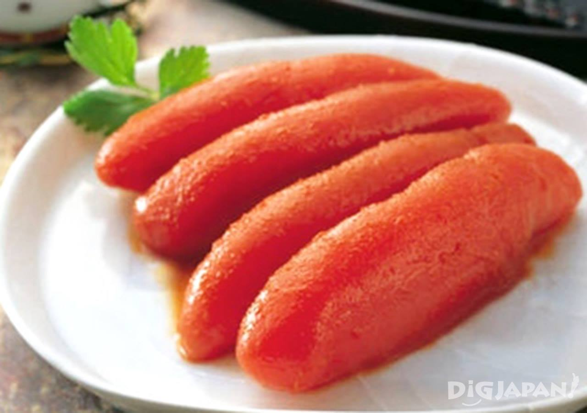

01

RAMEN · HAKATA
하카타 잇소
博多一双 · Hakata Issou돼지뼈를 진하게 우려낸 거품 국물로 유명한 하카타 라멘집. 얇은 면과 진한 육수의 조합을 제대로 맛보고 싶을 때 추천해요.
진한 돈코츠 라멘, 속을 꽉 채운 모츠나베, 밥 위에 꽃피는 명란까지. 여행의 기억을 맛으로 남겨줄 후쿠오카의 식당 세 곳을 골랐어요.

먹고 싶은 메뉴를 골라 보세요. 매장 운영 시간과 대기 상황은 방문 전 공식 안내를 확인하는 편이 좋아요.
돼지뼈를 진하게 우려낸 거품 국물로 유명한 하카타 라멘집. 얇은 면과 진한 육수의 조합을 제대로 맛보고 싶을 때 추천해요.

부추를 산처럼 쌓아 올린 비주얼부터 인상적인 후쿠오카식 곱창전골. 여럿이 둘러앉아 나눠 먹기 좋은 저녁 메뉴예요.
다시마로 감싼 명란을 따뜻한 밥 위에 올려 먹는 명란덮밥 전문점. 명란을 곁들인 츠케멘도 함께 즐길 수 있어요.
각 식당은 서로 다른 동네에 있어요. 일정에 맞춰 한두 곳을 골라 여유롭게 즐겨보세요.